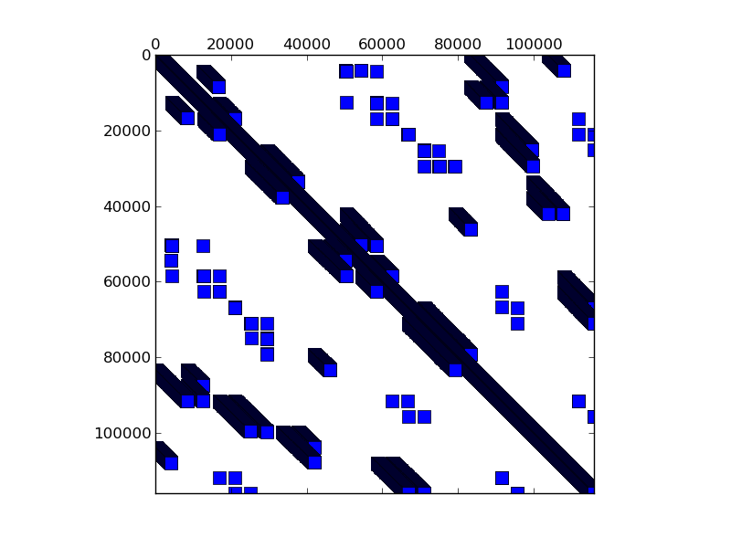

Matrix: torso2

Program arguments: ../build/test_spmv_sim ../fpga16-benchmark/fpga16/torso2.mtx File: ../fpga16-benchmark/fpga16/torso2.mtx Sorting took: took 0.0647951 seconds. Param MatrixPath ../fpga16-benchmark/fpga16/torso2.mtx Running on DFE Result Simple Total cycles=1107695, Result Simple Padding cycles=1, Result Simple Reduction cycles=927736, Config ArchitectureId 3 Result Simple Input width =16, Result Simple Pipes =1, Result Simple Iterations=1, Result Simple Took (ms)=27.8679, Result Simple Est (ms)=0.011077, Result Simple Gflops (est)=0.186599, Result Simple Gflops (actual)=7.41693e-05, Result Simple BWidth (est)=17.8814, Test passed! All tests passed!
Name, Order, Nonzeros, Unique Values, Sparsity, MC(2), MC(5), MC(8), MC(10) torso2 115969 1033473 806653 0.00768 0.00001 0.00006 0.00050 0.00198 0.01585